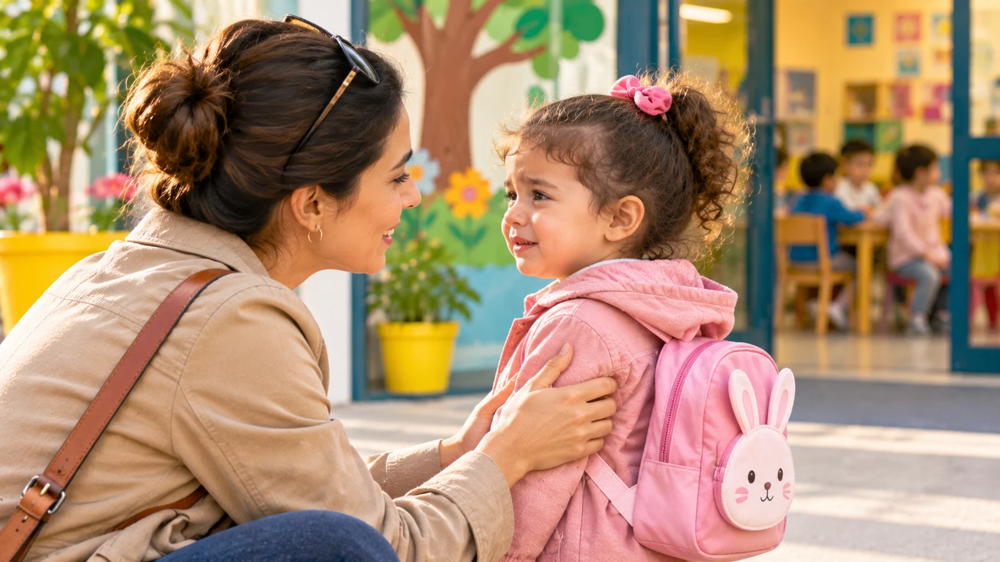

Le moment de quitter son parent pour entrer à la crèche ou à l’école peut être délicat. Certains enfants partent volontiers, tandis que d’autres pleurent, s’accrochent ou manifestent leur inquiétude.
Ces réactions peuvent être éprouvantes pour les familles, mais elles ne signifient pas nécessairement que l’enfant est malheureux dans son lieu d’accueil. La séparation mobilise des émotions encore difficiles à comprendre et à exprimer pour un tout-petit.
Pourquoi mon enfant pleure-t-il au moment du départ ?
Le jeune enfant construit progressivement son sentiment de sécurité affective. Il peut comprendre que son parent s’éloigne sans encore parvenir à se représenter facilement le moment des retrouvailles.
Ces réactions, souvent appelées angoisse de séparation, sont fréquentes entre 6 mois et 3 ans environ. Elles sont souvent plus marquées entre 12 et 24 mois. Chez certains enfants, elles durent plus longtemps ou réapparaissent lors d’une période de changement ou de stress.
La séparation peut aussi être plus difficile lorsqu’il est fatigué, malade, contrarié ou confronté à un changement : nouvelle organisation familiale, retour après des vacances, arrivée dans un nouvel établissement ou modification des habitudes.
Chaque enfant réagit différemment. Certains expriment leur inquiétude par des pleurs, d’autres par le silence, l’opposition ou le besoin de rester près de l’adulte. Mettre des mots sur ce qu’il ressent peut l’aider : vous trouverez des pistes pour aider son enfant à exprimer ses émotions.
Comment rendre la séparation plus rassurante ?
Installer un rituel court
Un rituel prévisible aide l’enfant à comprendre ce qui va se passer. Un câlin, quelques mots rassurants et un au revoir toujours organisé de la même manière peuvent devenir des repères. Comme pour installer des repères réguliers au quotidien, c’est la régularité qui rassure, davantage que le contenu du rituel. Ces mots peuvent être dits dans la langue de la maison : l’important est qu’ils soient familiers.
Un doudou ou un objet familier peut aussi l’aider à s’apaiser, si le lieu d’accueil le permet.
Dire au revoir, puis partir sans s’attarder
Partir sans prévenir, pendant que l’enfant est occupé, peut le surprendre au moment où il remarque votre absence. Il est préférable de lui dire au revoir avec des mots simples, puis de partir sans prolonger ce moment : un départ qui s’éternise rend souvent la transition plus longue. Revenir comme vous l’avez annoncé renforce, jour après jour, sa confiance.
Annoncer les retrouvailles
Pour un jeune enfant, l’heure n’a pas encore beaucoup de sens. Pour l’aider à se représenter votre retour, annoncez-lui un repère concret : « Après la sieste, je viendrai te chercher » ou « Quand j’aurai terminé mon travail, nous rentrerons ensemble ». Ces paroles l’aident progressivement à comprendre que la séparation est temporaire.
Vous pouvez aussi évoquer ce que vous ferez ensemble en vous retrouvant le soir : un moment de jeu, une histoire, une promenade. Il a ainsi quelque chose à attendre.
Garder une attitude calme
L’enfant peut percevoir l’inquiétude de son parent. Même si la séparation est émotionnellement difficile, une attitude douce et assurée contribue à le rassurer. Ce moment peut aussi être difficile pour vous : c’est normal, et cela ne signifie pas que vous vous y prenez mal.
S’habituer progressivement
De courtes séparations, par exemple en confiant l’enfant quelques instants à un proche de confiance, l’aident à découvrir que vous revenez toujours. Ces moments peuvent ensuite être allongés progressivement.
Échanger avec l’équipe d’accueil
Transmettez les informations utiles : sommeil, changements récents, objet rassurant ou habitudes qui aident votre enfant. Une continuité entre la maison et le lieu d’accueil facilite l’accompagnement.
Faut-il s’inquiéter si les pleurs persistent ?
Les pleurs ne permettent pas, à eux seuls, de conclure que l’adaptation se passe mal. Il est utile d’échanger avec l’équipe pour comprendre comment l’enfant évolue après le départ, comment il participe à la journée et ce qui semble l’apaiser.
Ces difficultés s’atténuent généralement avec le temps, et il est rare qu’elles se prolongent chaque jour au-delà de l’âge préscolaire. Si la détresse reste très intense, s’aggrave ou s’accompagne de changements préoccupants dans le sommeil, l’alimentation ou le comportement, parlez-en avec votre pédiatre et l’équipe qui accueille votre enfant.
En conclusion
La séparation est un apprentissage qui se construit progressivement. Des rituels réguliers, des paroles rassurantes et une relation de confiance entre les parents et l’équipe d’accueil peuvent aider l’enfant à vivre ces moments plus sereinement.
L’objectif n’est pas d’exiger qu’il ne pleure plus, mais de lui montrer qu’il peut être accompagné et retrouver son parent après la séparation.
L’équipe de l’École Maternelle Lila, Avec vous, pas à pas.